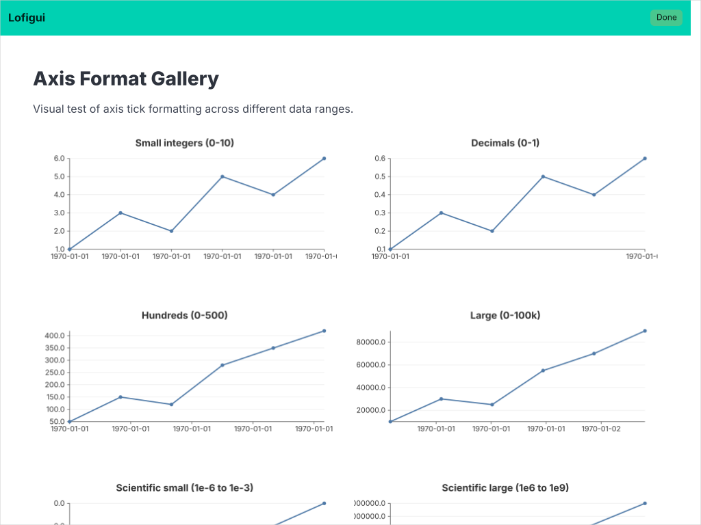

01a — Axis Formats
Visual test of axis tick formatting across different data ranges. This gallery shows how gogal formats axis ticks for numeric, scientific, temporal, and ordinal data.

What it demonstrates
| Category | Input Range | Expected tick labels |
|---|---|---|
| Small integers | 0-10 | 0, 2, 4, 6, 8, 10 |
| Decimals | 0-1 | 0, 0.2, 0.4, ... |
| Hundreds | 0-500 | 0, 100, 200, ... |
| Large | 0-100k | 0, 20000, 40000, ... |
| Scientific small | 1e-6 to 1e-3 | 1e-06, ... |
| Scientific large | 1e6 to 1e9 | 1e+06, ... |
| Negative | -50 to 50 | -40, -20, 0, 20, 40 |
| Narrow | 10.0-10.5 | 10, 10.1, 10.2, ... |
| Temporal (hours) | 24h | 00:00, 04:00, ... |
| Temporal (days) | 30d | Jun 01, Jun 10, ... |
| Temporal (months) | 12 months | Jan, Feb, Mar, ... |
| Temporal (years) | 2020-2030 | 2020, 2022, 2024, ... |
| Ordinal (weekdays) | Mon-Sun | Mon, Tue, ... |
| Ordinal (categories) | Named items | Alpha, Beta, ... |
Temporal axis uses
TemporalScale which formats Unix timestamp ticks as human-readable times via Go's time.Format(). Set the format with WithTimeFormat("15:04").
Ordinal axis uses
OrdinalScale which maps discrete indices to equal-width bands. Labels come from DataPoint.Label when no Time is set.
Running
task example:01a
Serves at http://localhost:1339.